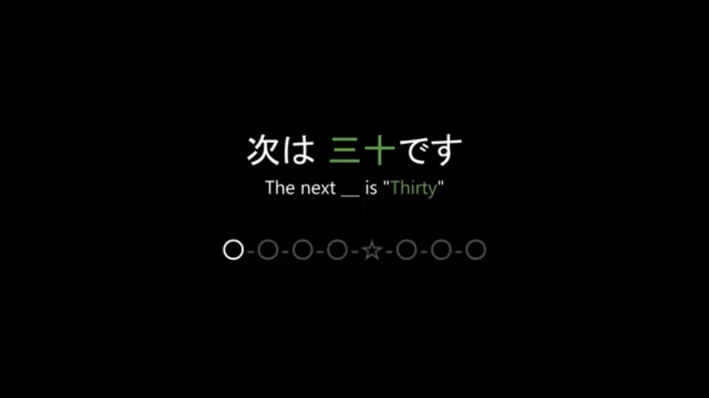

| 活動名 | hyper star |
| 活動時期 | 2019年9月～ |
| 好きなゲーム | Minecraft |
活動内容
Minecraft(統合版)を9000時間以上プレイしてきました。
長年コマンドによる制作に取り組み、処理の軽量化も意識しながら、1人で1ワールドに2804個のコマンドブロックを用いた大規模開発を行った経験があります。
現在はアドオン開発に取り組み、JSON・JavaScriptを用いたゲーム制作を行っています。


自作動画
本コンテンツは、権利およびプライバシーへの配慮のため、一般公開は行っておりません。
外部への共有・転載はご遠慮いただけますと幸いです。
プライベートで制作した動画のため、一部にラフな表現や内輪的な要素が含まれます。あらかじめご了承ください。
Minecraftで開催している自作人狼ゲームについて、数年間の活動の経緯や歴史を紹介しています。
ゆっくり音声と字幕による解説を入れ、見やすさを意識して制作しました。
Minecraftの攻略映像を編集した動画です。
長時間の映像素材から見どころを整理し、要点を分かりやすくまとめて編集しました。
動画のBGMは、オリジナル曲やアレンジ曲を制作して使用しています。
フレンドの誕生日を祝う企画の第一期です。
相手ごとに異なるテーマを設定し、それぞれに合わせた内容で制作しました。
動画のBGMは、毎回異なるオリジナル曲やアレンジBGMを制作して使用しています。
「思い出」をテーマにした動画です。
「謎」をテーマにした動画です。
「ネタ」と「祝い」をテーマにした動画です。
「まとめ」をテーマにした動画です。
「歴史」をテーマにした動画です。
制作風景をまとめたおまけ動画です。
フレンドの誕生日を祝う企画の第二期です。
テーマは「電車」。
時の流れを電車に例え、実際に誕生日を迎えるタイミングに合わせて、1本ずつ動画を制作していました。
最後の動画は、8分を超える特別版となっています。
動画内に登場する「誕生日記念品」は、Minecraftのアドオンを使い、モデリングやテクスチャを含めて全て一人で制作しました。
各動画の最後には、次回の内容を示す意味深な予告を入れています。
一番最初の動画をよく観察すると、最後に登場する駅名が分かる考察要素を隠しています。

こちらの再生リストから、まとめてご覧いただけます。